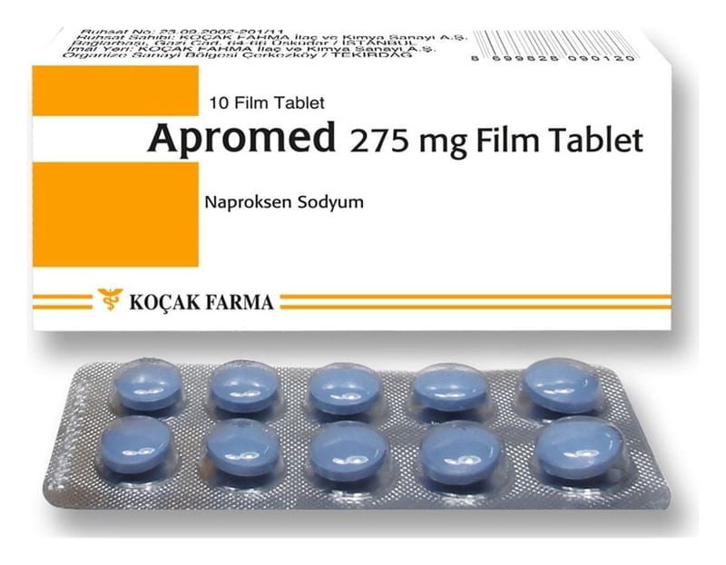

Apromed 275 mg Film Kaplı Tablet, 10 Adet

Ne için kullanılır
KT · Bölüm 1• APROMED, mavi renkli, iki yüzlü bombeli, kenarları düz, yuvarlak film kaplı tabletlerdir. • APROMED, 10 ve 20 tabletlik PVC/Aluminyum folyo blister ambalajlarda sunulur. • APROMED, ağrı ve iltihaba etkili (NSAİ) ilaçlar grubundan ağrı kesici etkilere sahip bir ilaçtır.
APROMED;
• Travma veya diğer durumlara bağlı olarak ortaya çıkan eklem kıkırdağının harabiyeti, ağrı ve fonksiyon kaybıyla karakterize eklem iltihabı, • El ve ayak eklemlerinde gelişen ağrılı eklem iltihabı, • Özellikle omurgada gelişen romatoid artrit benzeri bir hastalık olan ankilozan spondilit,
• Proteinin parçalanmasındaki bir soruna bağlı olarak bağ dokusu ve eklem kıkırdağında gözlenen şiddetli ağrı (akut gut) gibi romatizmal hastalıkların tedavisinde iltihap giderici ve
ağrı kesici olarak, • Akut kas iskelet (kemik) sistemi ağrılarında • Kadınlarda adet sancılarına bağlı ağrılarda ağrıyı kesmek amacıyla, • Ortopedik ve cerrahi ameliyatlarda ağrı kesici olarak, kullanılır.